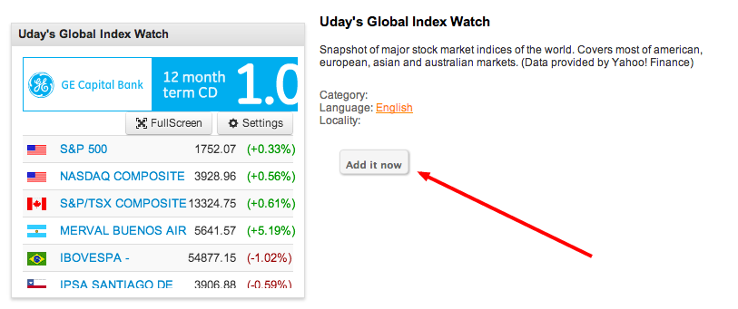
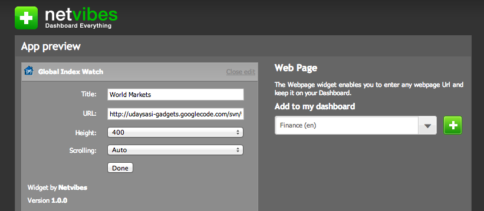
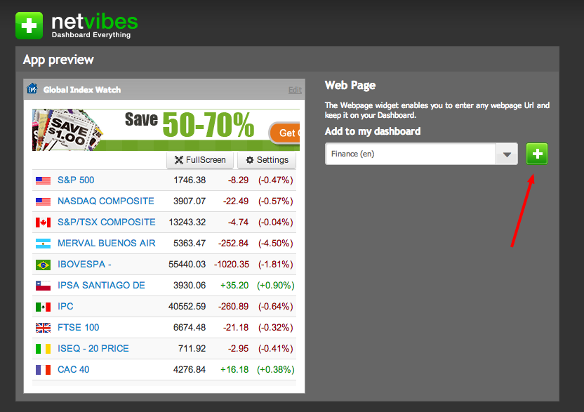

|
Add this gadget to igHome Add this gadget to Netvibes Add this gadget to your personal webpage/blog How to add Global Index Watch to igHomeFollow these steps to add this gadget to your igHome page1) Click here to search for the gadget 2) Click on the Add It Now button  3) Thats it. You can now start monitoring the world markets on your Dashboard. How to add Global Index Watch to NetvibesFollow these steps to add this gadget to your Netvibes page1) Click here to launch the Add Gadget page 2) Click on the Edit Link shown below  3) Enter the title of your choice 4) Enter the following url in the URL field : http://udaysasigadgets.github.io/globalIndexWatch.html 5) Enter the height of the gadget. A value of 400 or more is recommended. If you don''t set it right, dont worry. You can always change it later 6) Choose the Dashboard page you would like to add this widget to and click on the + button as shown below..  7) Thats it. You can now start monitoring the world markets on your Dashboard. How to add Global Index Watch to your personal webpage/blogDo you have a Financial webpage or blog? Do you want to provide your viewers with their own version of Global Index Watch? Just copy/paste the following code inside of your webpage and you will have the gadget enabled.Change the height of the gadget according to your needs.. Thank you for adding my module to your homepage. Global Index Watch is an extremely simple module that tracks the indices of most of the markets in North America, Latin America, Europe, Asia and Australia. Support for Global Index Watch
Options in Global Index Watch - You can choose to view the indices from either American or Europe or Asian markets. Alternatively, you can choose All if you wish to see all the market indices. - For viewers with low resolution browsers, there is an option to hide either Change or Percentage Change columns of the data that is shown. If you wish to see all, select None for this option. - A flag image is provided for every index, which represents the country where the exchange this index belongs to is located. This helps habituated users to quickly identify their entry from the list rather than searching for the Index name.
Global Index Watch Chrome Extension If you use Google Chrome, you can get the gadget on your browser as an extension. Click here to download the extension. Quick Stock Watch Like this module? Want to track more than just the indices? Try my other module Quick Stock Watch where you have the option of adding/deleting stocks you wish to track. You can also track Options, Mutual Funds, Forex rates, Commodities and much more. Charts are also available wherever possible. You will even be able to search for stocks that you don't remember the ticker symbols for. The module notifies you of any latest news related to stocks in your watch list. Last but not the least, its got a very simple Portfolio Tracker too.. So, why not give it a try?
Disclaimer: All the data displayed is provided by Yahoo! Finance and I do not verify any of it. Please do not copy or use the code for any other reason. The data could be real-time or might be delayed by few minutes based on what you are monitoring. Refer to Yahoo! Finance for more information. (Last Updated : April 15th 2016)
|
|